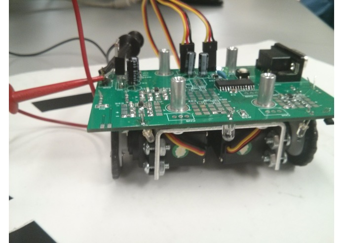
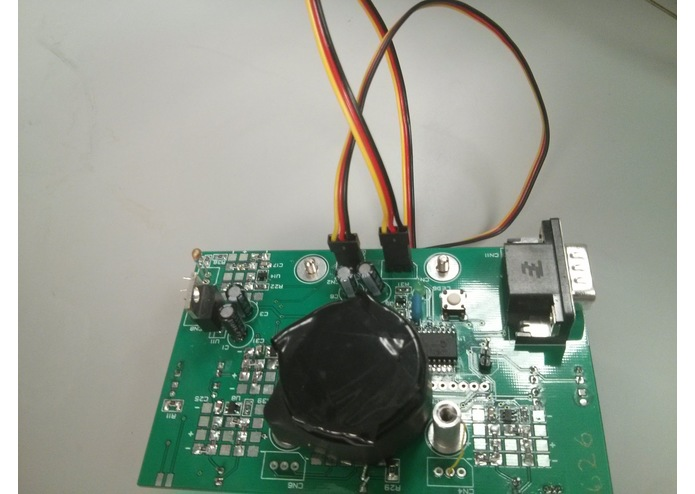
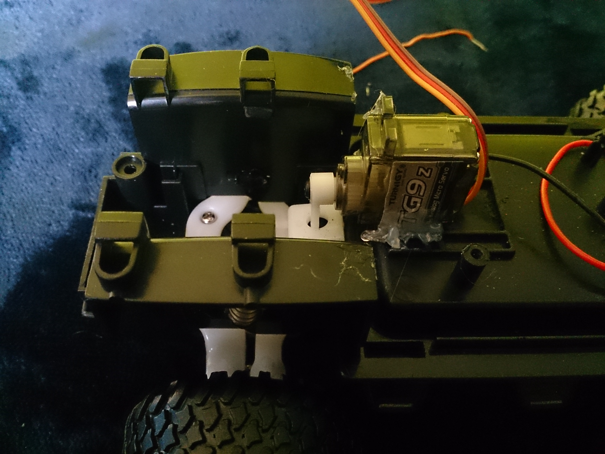
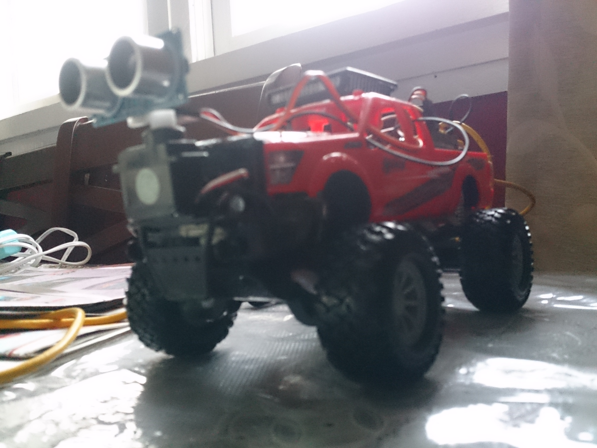
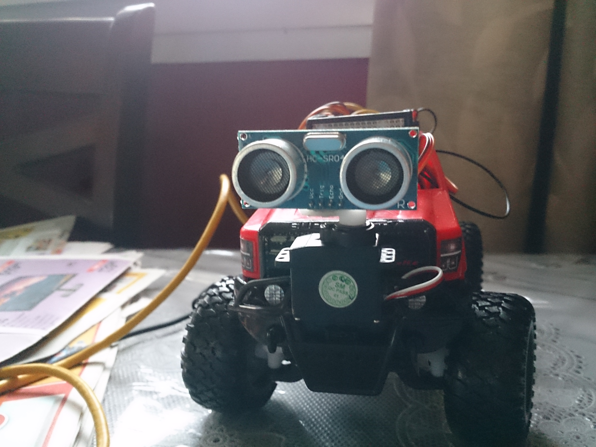
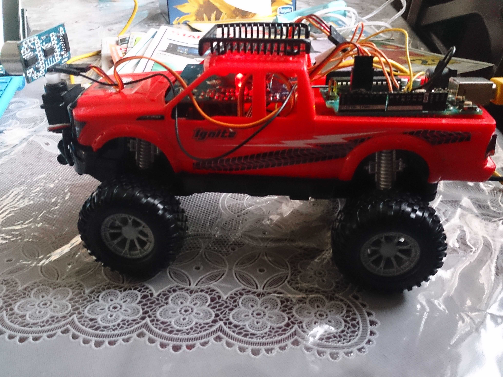
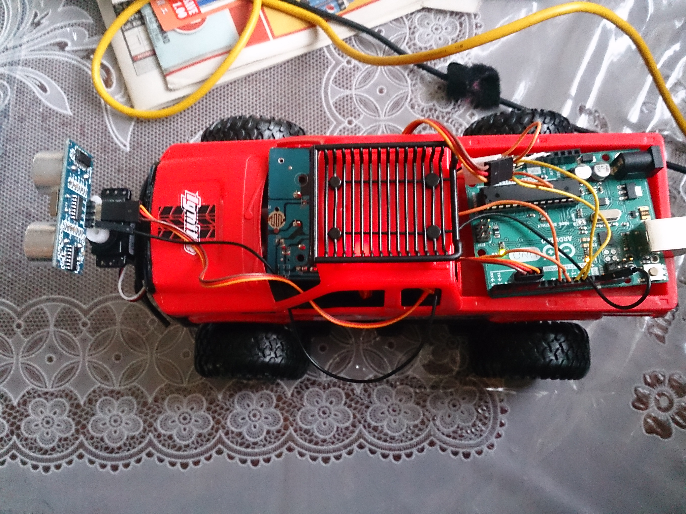

ABOUT
I am a 3rd year Mechatronics Engineering student at the University of Waterloo.
I am extremely passionate about everyting related to automation and robotics. My main interest lies with automation of vehicles, such as self driving cars and automated quadcopters.
I am also a talented .NET developer with experience in MVC web applications built on the .NET framework and MVVM desktop applications.


- 
- 
Line Following Robot
- C
- Op Amp
- Soldering
The line following robot was developed for a second year circuits course lab. The robot is able to follow any path outlined by a black tape, even if the path is not continuous. The robot is also able to detect magnetic fields in its path. The robots requirements were to follow a path from start to finish without going off track within a certain period of time, and at the same time detect magnets on the track and react according to the magnet’s polarity. If the magnets polarity was positive, then the robot should stop for 7 seconds and blink an LED, and if the magnets polarity was negative, then the robot should stop for 7 seconds with an LED constantly on. During the final demonstration, the robot was able to successfully complete all the requirements and received a perfect score.
Snakes
- C
- RTOS
Snakes was developed using the C language in Keil’s uVision IDE. The game was developed to run on a Keil evaluation board running an ARM Cortex-M3 processor. Several hardware peripherals were used for the game, such as a joystick to control the snake (tight polling), a push button to activate/deactivate the pause menu (hardware interrupt), and an array of LEDs to display the user’s score in binary. In order to both operate the game (check for game over conditions, create new ‘food’ blocks, etc.) and read the user’s inputs using tight polling at the same time, multithreading was used, with one task continuously checking for and applying user inputs and one task operating the game. Semaphores were used in the pause menu to pause the game when user activates the menu. Overall, the game worked perfectly as it should.

- 
- 
- 
- 
- 
Obstacle Avoidance Car
- C
- Arduino
The obstacle avoidance car was made as a personal pet project out of general interest for automation and to learn how to interact with sensors and actuators, and to increase my proficiency in C. The car consists of two servos, a DC motor, a sonar sensor, and an Arduino microcontroller. An h-bridge is used to drive the motor since the Arduino does not have enough power to drive it. Speed control of the motor was achieved through the use of PWM signals. The car uses an ultrasonic sensor, mounted on top of a servo, to detect objects in front of the car. If an object is detected, the servo turns left and right so that the sensor can measure distances to objects in both directions. The car then turns in the direction where the distance to an object is the furthest. All in all, the obstacle avoidance car project was a success and the car was able to navigate around the house without any intervention.
Smart Vendor
- C
- RobotC
- SolidWorks
Smart Vendor is a vending machine built using LEGO Mindstorms. The machine was created for a first year design project. The machine used different sensors, including a sonar sensor, a push button, and a color sensor in order to vend objects to users. The sonar sensor was used to detect if there is a person standing in front of the machine. If an object was detected, the machine would turn on. The user would then select an item from the menu, and insert the correct amount of currency in the form of colored poker chips, each of which had different values. The machine used a color sensor to detect which color was inserted and calculate whether the user inserted the right amount of currency. The machine would then use a custom built gantry system to push the object out of the shelf and into the dispensing window. The machine was programmed using Robot-C, a C based language with additional support for robot specific functions. The robot’s gantry system was designed using SOLIDWORKS and then manufactured using scrap metal based on the SOLIDWORKS design.
Cantilever Truss
- SolidWorks
A cantilever truss was designed for a second year failure analysis course. The purpose of the truss was to hold at least 70 times its own weight. Initially, several different designs were drawn on paper and the stresses across each of the members was calculated to see if the member would fail. The top 3 designs (designs with the lowest weight and where no member failed when the load was 70 times its own weight) were analyzed with more detail, and finally a design was selected. The selected design was then implemented in SOLIDWORKS to figure out the correct dimensions, and then it was built out of wood based on the dimensions from SOLIDWORKS. After intensive testing, the design was optimized such that the members that did not have any stress were shaved/filed down, while members that would fail first were reinforced. During the final competition, our design won second place since it was able to hold 367 times its own weight before breaking.
Distance Measuring Device
- Arduino
- C
- Python
- Numpy
- Statistics
The distance measuring device is a device that uses an ultrasonic sensor to measure the length of an object. The object is placed inside a box, and the end of the box is moved so that it is flushed to the object. The sensor then reads the distance to the edge, which gives the length of the object. The device is made up of an ultrasonic sensor and an Arduino microcontroller. In order to convert the sonar sensor’s output to a length in cm, a polynomial equation was generated measuring actual distances and comparing them to the sensor’s output, and then curve fitting the two values. Once the polynomial was developed, a script was developed to turn the sensor’s output into a cm value using the polynomial. Python’s numpy library was used to develop the polynomial. The device was able to measure objects to an accuracy of 87%.